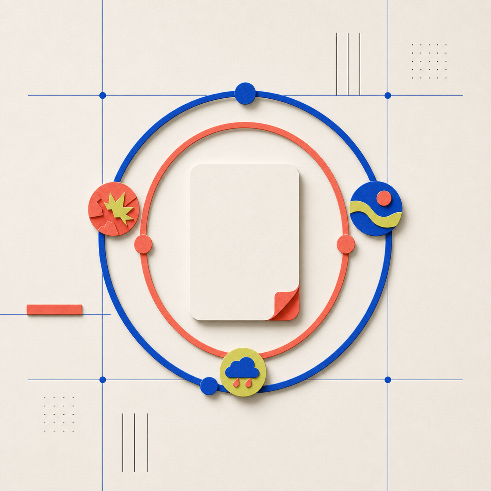

理解话题
说明读者基础，要求一个具体例子，术语随手解释。
OPENAI PROMPT GUIDE
复杂任务，只补对 4 类信息。目标、上下文、输出、边界。
Prompt 真正省下来的，是反复返工的时间。

用成品、受众和用途定义成功，而不是先写满步骤。
相关来源才是上下文，不是资料堆砌。
第一轮不是交卷；保留对的，具体改错的。
PROMPTING OVERVIEW
想得到什么结果？给谁用？
哪些来源、资料或视觉信息会改变答案？
要什么格式、长度、层级，才能拿来就用？
什么不能动？什么必须先问？
把 Prompt 当成“任务说明”，而不是一段必须背下来的咒语。
SAVE THISSTART WITH THE RESULT
除非过程本身很重要，否则会限制模型搜索、比较和调整做法的空间。
要做什么、给谁看、最后长什么样，这些会直接改变输出。
当过程并不关键时，留出方法空间，比把每一步写死更有用。
RESULT FIRSTONLY WHAT CHANGES THE ANSWER
适合总结、比较、转换，或生成可审阅文件。
点出图里关键区域，别只把图片丢过去。
需要最新信息时要求搜索和来源；连接数据源时说明找哪里、找什么。
好的上下文不是背景介绍，而是能让答案发生变化的证据。
CONTEXTPREVENT EXPENSIVE WRONG ACTIONS

边界不是控制每一步，而是避免一次错误就让整份结果失效。
SAFE BY DESIGNMAKE THE RESULT USABLE
告诉它结果准备怎么被使用，长度、细节与组织方式才会跟着对齐。
USABLE OUTPUTKEEP THE GOOD, CHANGE THE MISSING
Prompt 的价值不在一次写对，而在让下一次修改足够具体。
ITERATEQUESTIONS · IDEAS · DRAFTS
说明读者基础，要求一个具体例子，术语随手解释。
交代语气、长度和必须保留的关系或信息。
说清使用者场景；表格先呈现差异，再说明取舍。
给时间、限制和可复用条件，最后要一份汇总清单。
轻量任务也不是一句“帮我写”，而是先给它一个能判断的结果。
CHATSOURCES · TOOLS · REVIEW
给出相关材料、受众、输出格式与期望长度。
当方法本身重要时，先看计划，再让它收集、制作与检查。
影响别人前必须确认；第一版结果出来后再收窄或复用流程。
多步骤任务最重要的不是“让它多做”，而是先确定你怎么审它做得对不对。
WORKCODE · CONSTRAINTS · VERIFICATION
描述你想改变或得到的行为，不只报一个抽象问题。
指出相关代码、文件路径、复现步骤或附加材料。
保住 API、最小改动、兼容性或其他关键边界。
说明要跑什么测试、复现什么流程、在哪里看结果。
“修好它”不是验收标准；能复现、能测试、能检查的结果才是。
CODEXMATCH CONTEXT TO THE JOB
给最相关文件；要请求流、模块职责、校验点与改动风险。
给可复现步骤、怀疑文件与约束；先复现，再提出补丁和检查。
点名函数或附图；补足图片看不见的行为、验证和技术约束。
先明确范围、公开 API、迁移步骤和验证；长任务分里程碑审。
上下文不是越多越好，而是要和这一次任务的验证方式对得上。
MAPBEFORE YOU SEND
结果、受众或格式会改变输出时，就应该写出来。
相关来源、截图、数据源要说明用途，而不是全部塞进去。
不改什么、缺信息怎么办、影响别人前是否先确认。
格式、长度、终检条件，或可复现的验证方法。
保留已有证据，补一个来源、改一个方向，不必重新来过。
最好的 Prompt，不是最长的那条，而是让任务少走弯路的那条。
SAVE THIS